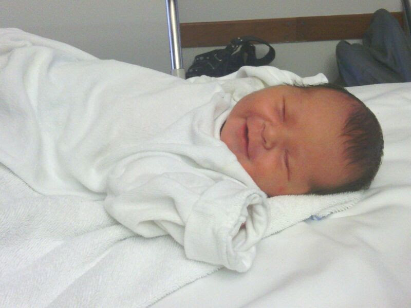

Capítulo 1 – El día que llegaste a mi mundo
El día que naciste fue una noche larga. Más que por la hora, por la espera.
Una espera llena de miedo, ansiedad y un millón de preguntas.
Las contracciones comenzaron alrededor de la medianoche.
Yo estaba ahí, intentando ayudar en lo que pudiera,
aunque en realidad solo quedaba esperar.
Esperar... y desear con todo mi ser que todo saliera bien.
En mi cabeza giraban pensamientos como una tormenta:
“¿Saldrá todo bien? ¿Y si algo sale mal? ¿Estoy realmente preparado para esto?”
Pero dentro de mí, también había una calma rara.
Como si una parte de mí ya supiera que ese momento era para nosotros.
Y entonces, después de un día entero... llegaste.
Vi cómo asomabas tu cabecita, cómo tu llanto llenó la sala, y en ese instante,
algo en mí se rompió y se reconstruyó al mismo tiempo.
No podía dejar de mirarte. Tu carita, tan pequeña, tan frágil… y tan poderosa.
Porque en un segundo, llenaste mi corazón de algo que nunca había sentido:
amor real. Amor sin condición, sin medida, sin palabras.
Supe en ese mismo instante que ya eras parte de mí.
No porque lo dijera un papel, no porque alguien lo confirmara.
Sino porque algo dentro de mí cambió para siempre.
Ese día fue el comienzo de todo. De los miedos,
de las luchas, de las noches sin dormir…
pero también del descubrimiento de una fuerza que no sabía que tenía.
Y esa fuerza eras tú. Lo eres tú.
Aunque haya pasado el tiempo,
aunque las circunstancias nos hayan separado,
aunque no siempre pude estar contigo como yo quería,
hay algo que quiero que sepas, desde este primer capítulo:
Tu papá te ama con todo lo que es.
Y desde el primer día, lo único que quiso… fue estar contigo.